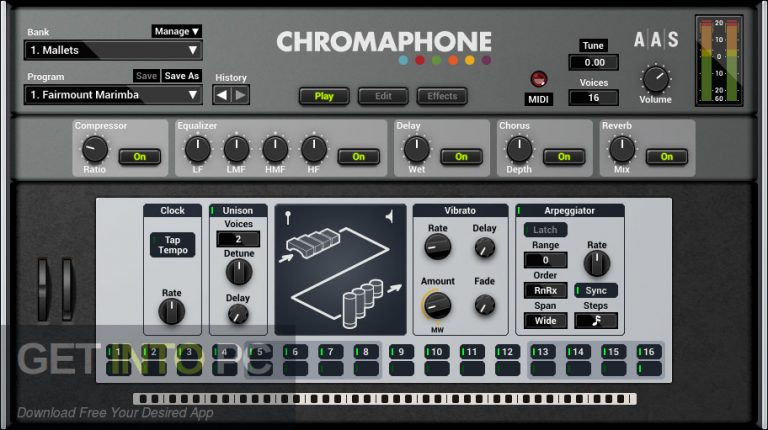

Chromaphone VST Free Download
Chromaphone VST Free Download
Download Free Your Desired App for MAC and PC
1
A
B
C
D
E
F
G
H
I
J
K
L
M
N
O
P
Q
R
S
T
U
V
W
X
Y
Z
2c audio aether vst
4front truepianos vst
808 bloodline vst
808 studio vst
8dio edm trap kontakt library
Abbey road modern drummer kontakt library
Ableton live suite
Accusonus era bundle pro 2
Acoustica mixcraft pro-studio
Adobe audition
Air music tech xpand2
Albino 3 vst
Ample sound ample guitar m iii-3
Antares auto tune evo
Antares auto tune
Antares avox evo vocal vst bundle
Apowersoft streaming audio recorder
Apple mainstage
Arturia-v plugins collection vst
Arturia pigments vst
Audacity
Audials one
Audio record wizard
Audio4fun av voice changer diamond
Audiothing plugins bundle vst
Auto tune efx
Auto tune evo
Avid protools
Avs audio editor
Bias amp-2
Bigasoft audio converter
Black octopus mystical indian percussion kontakt library vst
Blue cat audio blue cat’s all plug ins pack 2018 vst
Bornemark broomstick bass vsti
Breakaway audio enhancer
Cableguys halftime vst
Cakewalk sonar platinum 23 with plugins content
Cakewalk sonitus fx plugin suite vst
Cantabile performer vst
Celemony melodyne editor setup
Celemony melodyne editor
Chris hein solo violin kontakt library
Chromaphone vst
Classik studio reverb vst
Cockos reaper
Cool edit pro
Credland audio stereo savage vst
Cyberlink audiodirector ultra
Cyberlink wave Editor
Cytomic the glue vst
D16 all plugins total bundle vst
Dear reality dearvr pro vst
Diamond cut dc live forensics audio laboratory
Dmg audio all vst plugin bundle
Dolby atmos
Dorico
Drumagog platinum 5 library
Drumdrops drums bundles kontakt library
Eiosis aireq premium vst plugin
Eiosis e2deesser vst
Emagic logic audio platinum
Empty 250 vst
Ethno world 6 complete vst
Exhale vocal engine vst kontakt library
Fab filters plugins pack
Fabfilter pro
Fabfilter total bundle vst
Filmstro pro
Fl studio 12.5 signature bundle all fl studio plugins
FL Studio 2019
Fl studio producer edition
Fl studio xxl producer edition v8.0.2 autotune v5
Future bass midi wav presets pack
Fxsound enhancer premium
Gilisoft audio recorder pro
Glitch 2 vst
Gsi vb3 ii vst
Harmony engine vst
Hypersonic 2 vst
Ichiro toda synth1 plugin
Idoser all doses
Ignite heat up v2 vst update
Ik-multimedia amplitube 4 vst
Ik-multimedia syntronik vst
Ik-multimedia t racks 5 vst
Image line fl studio producer edition 12.3 portable
Impact hits kontakt library
Internet ability pro
izotope insight vst
izotope mobius filter vst
izotope nectar 3 plugin
izotope ozone 6 advanced
izotope ozone advanced 8 vst
izotope ozone advanced v7
izotope rx 6 audio editor advanced
izotope rx 7 audio editor advanced vst
izotope rx loudness control
izotope-stutter edit
izotope stutter
izotope trash 2 vst
izotope vocal doubler vst
izotope vocalsynth v2
Jam origin midi guitar 2 vst
Jbridge
Keyscape 13 kontakt library
Korg legacy collection special bundle
Korg legacy collection vst bundle
Lacrimosa epic female choir kontakt library
Lakeside audio isola fx 2
Letasoft sound booster
Lexicon reverb bundle vst
Line6 helix native vst
Liquidsonics reverberate 2 vst
Logic pro x dmg
Longcat audio h3d vst plugin
Loopmasters bass master vst plugin
Lounge lizard ep vst
Luxonix ravity vst bundle
Magic ab vst
Magix acid pro 8
Magix audio and music lab 2016 premium
Magix samplitude music studio 2017
Magix sound forge audio studio-10
Magix sound forge audio studio 2019
Magix sound forge pro 11
Mastering the mix levels
Mathew lane drms spatial processor vst
Meldaproduction maudioplugins 2019 vst
Mercuriall bundle vst
Midiculous
Midirunner 123tag
Miroslav philharmonik vst
Mixed in key
Mixvibes cross
Mixvibes remixlive
Modo bass
Morphvox pro
Motu daw
Motu digital performer v10
Mp3 resizer
Mp3tag 2019
Musiclab realeight
n-track studio ex
Native instruments absynth vsti
Native instruments discovery series india kontakt library
Native instruments discovery series middle east kontakt library
Native instruments fx vst pack
Native instruments kontakt 5.7.3 vst
Native instruments kontakt 6
Native instruments session guitarist
Native instruments session horns kontakt library
Naturalreader professional
NCH express dictate
NCH mixpad audio mixer
Neuratron audio score ultimate
Neuratron audioscore ultimate
Neuratron photoscore notateme ultimate 2018
Nextup textaloud 2019
Nicky romero kickstart vst
Nomad factory magma vst
Noteburner itunes drm audio converter
Oasys software suite 14.1
Output analog strings kontakt library
Overloud mark studio vst
Overloud th3 vst
Pdf to music pro
Pianoteq addons + presets
Pianoteq stage 6 vst
Plogue aria engine
Plogue plugins pack
Polyverse infected mushroom manipulator
Presonus notion 6
Presonus studio one professional 4
Presonus studio one
Pspaudioware-vst bundle
QPS Qimera 1.6.3
Radioboss advanced
Razer surround pro
Rc 20 retro color vst
Rc 20 retro color
Refx nexus house vol-1 expansion pack
Refx nexus v.2.2 all official banks
Refx nexus v.2.2 free
Regroover pro vst
Repeater vst
Reveal sound spire vst dmg
Reveal sound spire
Sample logic xosphere kontact
Sample logic xosphere-2 kontakt library
Samplehero evoque vocal synth kontakt library
Sampletank vst
Sausage fattener vst plugin
Scaler vst
Scarbee vintage keys kontakt library
Scott storch vst
Serato sample vst plugin
Session guitarist electric sunburst kontakt vst library
Shevannai the voices of elves kontakt library
Sidify spotify music converter
Slate digital verbsuite classics plugin
Slate digital virtual buss compressors vst
Slate digital vmr complete bundle vst
Softplug adventus vst
Solid state logic duende native vst
Sonalksis all plugins bundle vst
Sonar x3 producer edition
Sonarworks reference 4 studio
Sonic academy kick 2 vst
Sonik synth 2 vsti
Sony sound forge pro
Sony spectralayers pro
Sound normalizer
Soundplant
Soundtoys v5 vst
Spectrasonics omnisphere 2 complete pack
Spectrasonics stylus rmx vsti
Spectrasonics trilian vsti
Spinnin records base vst
Spitfire audio labs kontakt libraries
Steven slate drums ssd4 sampler library platinum
Sugarbytes effectrix
Superior drummer-3
Swar systems swarplugin
Sylenth1 preset banks collection
Symphony essentials percussion kontakt library
Synapse audio dune-3 vst
Synapse audio dune vsti
Synchro arts revoice pro
Synthmaster one vst
Tag and rename
Tal u no lx vst
Th studio trailer elements cinematic sounds pack kontakt library
Tone2 electra2
Tone2 gladiator vsti
Tone2 icarus
Tone2 saurus2
Tone2 electrax
Toontrack ezkeys complete vsti
Toontrack ezmix 2 with expansion pack
Toraverb vst
Tracktion 5
Tracktion waveform 9 vst
Tunefab spotify music converter
U-he-hive-vsti
Valhalla plate room vintage verb vst
Vengeance avenger
Vengeance electroshock vol-1 and-2
Vintage organs kontakt library
Virtual audio cable
Virtual dj pro-8 plugins
Virtual dj studio 2015
Vox engine-2 for kontakt
Voxal voice changer
Vsl horizon series saxophones i kontakt library
Wavepad sound editor master edition
Waves complete plugins 2018 v10
Widi music recognition system pro
Wondershare streaming audio recorder
Xfer-records-cthulhu
Xfer-records-lfotool vst
Xfer-records-serum-serumfx-cthulhu-lfotool-ott
Xfer-serum 1.20.b5
Xils vocoder 5000 vsts
Yamaha vocaloid 5.0.3 libraries standalone vsti
Yamaha vocaloid v4
Yogen vocal remover
Youlean loudness meter pro vst plugin
Zplane elastique pitch vst
Zynaptiq morph vst
Chromaphone VST Free Download

System Requirements
Technical Setup Details
How to Install
Operating System: Windows 7/8/8.1/10
Memory (RAM): 512 MB of RAM required.
Hard Disk Space: 100 MB of free space required.
Processor: Intel Core 2 Duo or later.
Software Full Name: Chromaphone VST
Setup File Name: Chromaphone_2.1.1.zip
Full Setup Size: 66 MB
Setup Type: Offline Installer / Full Standalone Setup
Compatibility Architecture: 32 Bit (x86) / 64 Bit (x64)
Latest Version Release Added On: 02nd Mar 2019
Developers:
Chromaphone
Before Installing Software You Must Watch Or Download This Installation Guide Video.
OR